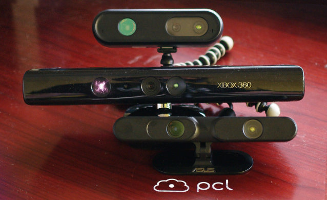
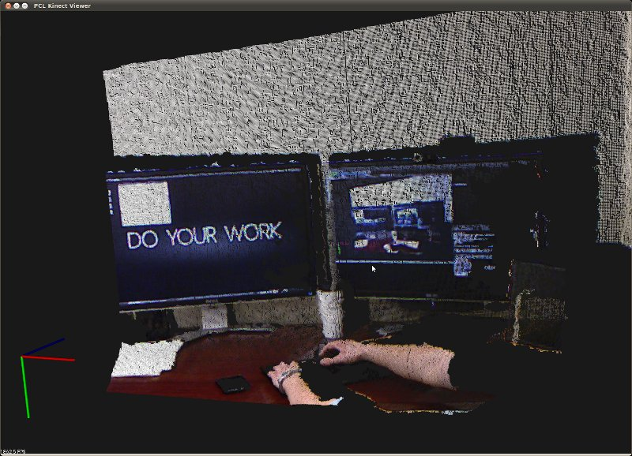

The OpenNI Grabber Framework in PCL
As of PCL 1.0, we offer a new generic grabber interface to provide a smooth and convenient access to different devices and their drivers, file formats and other sources of data.
The first driver that we incorporated is the new OpenNI Grabber, which makes it a breeze to request data streams from OpenNI compatible cameras. This tutorial presents how to set up and use the grabber, and since it’s so simple, we can keep it short :).
The cameras that we have tested so far are the Primesense Reference Design, Microsoft Kinect and Asus Xtion Pro cameras:
{kind=link}
Simple Example
In visualization, there is a very short piece of code which contains all that is required to set up a pcl::PointCloud<XYZ> or pcl::PointCloud<XYZRGB> cloud callback.
Here is a screenshot and a video of the PCL OpenNI Viewer in action, which uses the OpenNI Grabber.
{kind=link}
So let’s look at the code. From visualization/tools/openni_viewer_simple.cpp
1 2 3 4 5 6 7 8 9 10 11 12 13 14 15 16 17 18 19 20 21 22 23 24 25 26 27 28 29 30 31 32 33 34 35 36 37 38 39 40 41 42 | #include <pcl/io/openni_grabber.h>
#include <pcl/visualization/cloud_viewer.h>
class SimpleOpenNIViewer
{
public:
SimpleOpenNIViewer () : viewer ("PCL OpenNI Viewer") {}
void cloud_cb_ (const pcl::PointCloud<pcl::PointXYZ>::ConstPtr &cloud)
{
if (!viewer.wasStopped())
viewer.showCloud (cloud);
}
void run ()
{
pcl::Grabber* interface = new pcl::OpenNIGrabber();
std::function<void (const pcl::PointCloud<pcl::PointXYZ>::ConstPtr&)> f =
[this] (const pcl::PointCloud<pcl::PointXYZ>::ConstPtr& cloud) { cloud_cb_ (cloud); };
interface->registerCallback (f);
interface->start ();
while (!viewer.wasStopped())
{
boost::this_thread::sleep (boost::posix_time::seconds (1));
}
interface->stop ();
}
pcl::visualization::CloudViewer viewer;
};
int main ()
{
SimpleOpenNIViewer v;
v.run ();
return 0;
}
|
As you can see, the run () function of SimpleOpenNIViewer first creates a new OpenNIGrabber interface. The next line might seem a bit intimidating at first, but it’s not that bad. We create a lambda object which invokes cloud_cb_, we capture a copy of this to get an pointer to our SimpleOpenNIViewer, so that cloud_cb_ can be invoked.
The lambda then gets casted to a std::function object which is templated on the callback function type, in this case void (const pcl::PointCloud<pcl::PointXYZ>::ConstPtr&). The resulting function object can the be registered with the OpenNIGrabber and subsequently started. Note that the stop () method does not necessarily need to be called, as the destructor takes care of that.
Additional Details
The OpenNIGrabber offers more than one datatype, which is the reason we made the Grabber interface so generic, leading to the relatively complicated lambda line. In fact, we can register the following callback types as of this writing:
void (const pcl::PointCloud<pcl::PointXYZRGB>::ConstPtr&)
void (const pcl::PointCloud<pcl::PointXYZ>::ConstPtr&)
void (const openni_wrapper::Image::Ptr&)
This provides just the RGB image from the built-in camera.
void (const openni_wrapper::DepthImage::Ptr&)
This provides the depth image, without any color or intensity information
void (const openni_wrapper::Image::Ptr&, const openni_wrapper::DepthImage::Ptr&, float constant)
When a callback of this type is registered, the grabber sends both RGB image and depth image and the constant (1 / focal length), which you need if you want to do your own disparity conversion.
Note
All callback types that need a depth _and_ image stream have a synchronization mechanism enabled which ensures consistent depth and image data. This introduces a small lag, since the synchronizer needs to wait at least for one more set of images before sending the first ones.
Starting and stopping streams
The registerCallback call returns a boost::signals2::connection object, which we ignore in the above example. However, if you want to interrupt or cancel one or more of the registered data streams, you can call disconnect the callback without stopping the whole grabber:
boost::signals2::connection = interface (registerCallback (f));
// ...
if (c.connected ())
c.disconnect ();
Benchmark
The following code snippet will attempt to subscribe to both the depth and color streams, and is provided as a way to benchmark your system. If your computer is too slow, and you might not be able to get ~29Hz+, please contact us. We might be able to optimize the code even further.
1 2 3 4 5 6 7 8 9 10 11 12 13 14 15 16 17 18 19 20 21 22 23 24 25 26 27 28 29 30 31 32 33 34 35 36 37 38 39 40 41 42 43 44 45 46 47 48 49 50 51 52 53 54 55 | #include <thread>
#include <pcl/point_cloud.h>
#include <pcl/point_types.h>
#include <pcl/io/openni_grabber.h>
#include <pcl/common/time.h>
using namespace std::chrono_literals;
class SimpleOpenNIProcessor
{
public:
void cloud_cb_ (const pcl::PointCloud<pcl::PointXYZRGBA>::ConstPtr &cloud)
{
static unsigned count = 0;
static double last = pcl::getTime ();
if (++count == 30)
{
double now = pcl::getTime ();
std::cout << "distance of center pixel :" << cloud->points [(cloud->width >> 1) * (cloud->height + 1)].z << " mm. Average framerate: " << double(count)/double(now - last) << " Hz" << std::endl;
count = 0;
last = now;
}
}
void run ()
{
// create a new grabber for OpenNI devices
pcl::Grabber* interface = new pcl::OpenNIGrabber();
// make callback function from member function
std::function<void (const pcl::PointCloud<pcl::PointXYZRGBA>::ConstPtr&)> f =
[this] (const pcl::PointCloud<pcl::PointXYZRGBA>::ConstPtr& cloud) { cloud_cb_ (cloud); };
// connect callback function for desired signal. In this case its a point cloud with color values
boost::signals2::connection c = interface->registerCallback (f);
// start receiving point clouds
interface->start ();
// wait until user quits program with Ctrl-C, but no busy-waiting -> sleep (1);
while (true)
std::this_thread::sleep_for(1s);
// stop the grabber
interface->stop ();
}
};
int main ()
{
SimpleOpenNIProcessor v;
v.run ();
return (0);
}
|
Compiling and running the program
Add the following lines to your CMakeLists.txt file:
1 2 3 4 5 6 7 8 9 10 11 12 | cmake_minimum_required(VERSION 2.8 FATAL_ERROR)
project(openni_grabber)
find_package(PCL 1.2 REQUIRED)
include_directories(${PCL_INCLUDE_DIRS})
link_directories(${PCL_LIBRARY_DIRS})
add_definitions(${PCL_DEFINITIONS})
add_executable (openni_grabber openni_grabber.cpp)
target_link_libraries (openni_grabber ${PCL_LIBRARIES})
|
Troubleshooting
Q: I get an error that there’s no device connected:
Note
[OpenNIGrabber] No devices connected. terminate called after throwing an instance of ‘pcl::PCLIOException’ what(): pcl::OpenNIGrabber::OpenNIGrabber(const std::string&) in openni_grabber.cpp @ 69: Device could not be initialized or no devices found. [1] 8709 abort openni_viewer
A: most probably this is a problem with the XnSensorServer. Do you have the ps-engine package installed? Is there a old process of XnSensorServer hanging around, try kill it.
Q: I get an error about a closed network connection:
Note
terminate called after throwing an instance of ‘pcl::PCLIOException’ what(): No matching device found. openni_wrapper::OpenNIDevice::OpenNIDevice(xn::Context&, const xn::NodeInfo&, const xn::NodeInfo&, const xn::NodeInfo&, const xn::NodeInfo&) @ /home/andreas/pcl/pcl/trunk/io/src/openni_camera/openni_device.cpp @ 96 : creating depth generator failed. Reason: The network connection has been closed!
A: This error can occur with newer Linux kernels that include the gspca_kinect kernel module. The module claims the usb interface of the kinect and prevents OpenNI from doing so. You can either remove the kernel module (rmmod gspca_kinect) or blacklist it (by executing echo “blacklist gspca_kinect” > /etc/modprobe.d/blacklist-psengine.conf as root). The OpenNI Ubuntu packages provided by PCL already include this fix, but you might need it in other distributions.
Conclusion
The Grabber interface is very powerful and general and makes it a breeze to connect to OpenNI compatible cameras in your code. We are in the process of writing a FileGrabber which can be used using the same interface, and can e.g. load all Point Cloud files from a directory and provide them to the callback at a certain rate. The only change required is the allocation of the Grabber Object (pcl::Grabber *g = new …;).
If you have a sensor which you would like to have available within PCL, just let us know at pcl-developers@pointclouds.org, and we will figure something out.